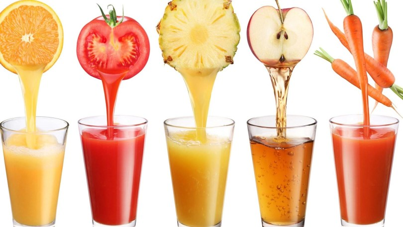

Cocinando
El Blog de los amantes de la
Gastronomía


Pasta Artesanal
12 de abril del 2018
Oh mamma, quanto è buona la pasta! Junto con el pan la pasta es una de las cosas que más me gusta hacer. Hace ya casi 10 años que vivo en Italia y no me canso, literalmente, de prepararla y de comerla. Obviamente, aquí en Italia la pasta es una institución, no pasan más de dos días sin probarla. Como en mi casa cuando uno no sabía qué hacer y se preparaban patatas fritas con huevo, aquí en Italia la opción es siempre un plato de pasta, simple, con il pomodoro. Hacerla en casa requiere mucho menos tiempo del que podemos imaginar y si preparamos una buena cantidad es posible congelarla para tenerla, de este modo, siempre lista para cocinar.
Existe una pequeña fórmula que casi siempre funciona cuando preparamos pasta y esta es: 100 g de sémola de trigo duro o harina 00 + 1 huevo por persona. La realidad no es siempre como las matemáticas ya que con 100 g por persona la porción de pasta es muy abundante, para mí demasiado, pero claro depende del comensal. Por otro lado la cantidad de líquido, que puede ser huevo y a veces agua (según el tipo de pasta), dependerá del tipo de sémola o harina que utilicemos y de su capacidad de absorción. Los grandes maestros de pasta dicen que hasta la altura a la que nos encontremos respecto al nivel del mar puede influir, pero eso es ya otra historia…
A mí hoy me gustaría presentaros una receta sencilla para preparar la pasta casera al huevo. Como os decía se puede utilizar sémola o harina: la sémola nos dará una pasta más “rústica” y la harina una textura más delicada. El uso del huevo comporta que, sobre todo ahora en verano, tengamos que seguir unas reglas de higiene más rígidas para evitar posibles contagios. Es buena costumbre utilizar huevos de los que conozcamos su procedencia y de lavarlos delicada y rápidamente con agua, jabón y un estropajo. También es muy importante lavarnos muy bien las manos después de haberlos manipulado. ¡Unas sencillísimas reglas para preparar pasta fresca casera sin ningún riesgo!
 Maria23: Que gran post, aprendí mucho sobre la pasta artesanal
Maria23: Que gran post, aprendí mucho sobre la pasta artesanal
 Juan_F: Me gustaría saber el tiempo de reposo.
Chef_788: Me agrada la explicación en la preparacion de los platos
Juan_F: Me gustaría saber el tiempo de reposo.
Chef_788: Me agrada la explicación en la preparacion de los platos
Jugos naturales
15 de abril del 2018
Los jugos recién exprimidos son una bebida muy nutritiva, principalmente por las vitaminas que contienen. Los jugos conservados en tetra brik, también conocido como tetra pack, suelen ser "jugo hecho a partir de jugo concentrado". Esto significa que, después de ser exprimidos, han sido concentrados evaporando el agua mediante calor, y posteriormente se les ha añadido agua para envasarlos. Esto permite transportar menos agua y ahorrar costos, pero este proceso destruye gran parte de las vitaminas, lo que elimina la principal cualidad nutritiva de los jugos.
Otra de las cualidades nutritivas que se pierden de las frutas al realizar zumos es la eliminación de la fibra propia del fruto, como por ejemplo, la naranja, ya que al exprimir la fruta se elimina la "pulpa", que es lo que aporta la fibra.
Para prepararlos en casa, es necesario poseer un aparato llamado exprimidor o escariador para obtener jugo de naranja, limón o pomelo. También se utiliza un extractor para obtener jugo de otras frutas u hortalizas como las manzanas o zanahorias.
Master_chef: Una nueva opcion saludable